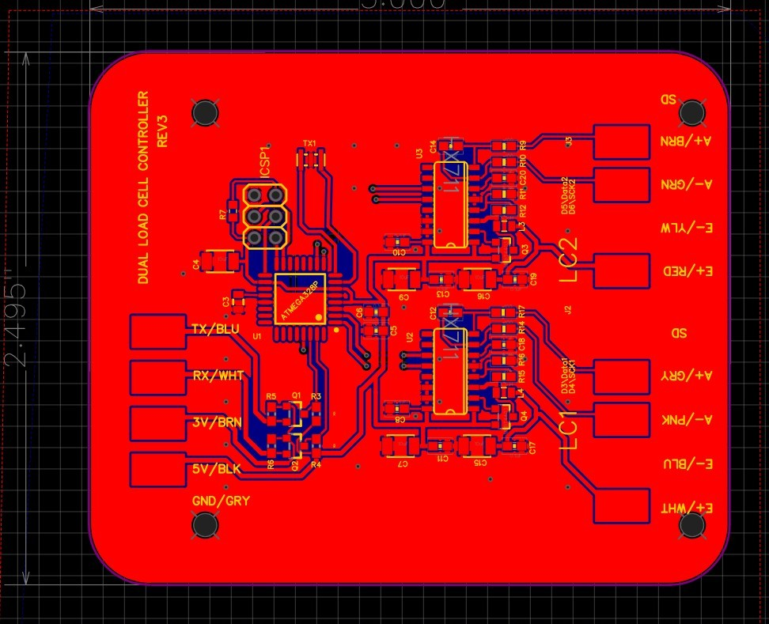

AutoRejection
Node-RED automation system with hardware integration and a custom dashboard UI
 Front
Front
 Top
Top
 Back
Back

Load Cell PCBOverview
The Autorejection project was a side project that became a business concept. I worked on it for most of a year, building it with my business partner under the company MAP Equipment, in cooperation with Wild Goose Filling and several local breweries in the Bozeman area. It was the second machine I programmed with MAP Equipment, the first being a packaging machine capable of boxing 12 packs or applying paktecs to 6 packs of beer with only one prototype. Both of these were controlled by Raspberry Pi single-board computers, with the UI presented over Wi-Fi.
Aside from the technical challenges, many business challenges made these projects full of hard-earned experience. Overall, working with Wild Goose Filling was an incredible experience that I had hoped would have turned into more; they ultimately bought 5 of the 10 total units sold. They had a separate version from the one pictured that integrated with the output feed of their existing canning lines, a design that required extensive prototyping to get working at 50+ cans per minute.
The Autorejection system included a UI with historical graphs of beer weights, current can weights as they passed over the scale, and a calibration routine. Stored data can be downloaded to a connected device in CSV format for customer use. It also communicated with AWS IoT to allow for over-the-air updates and data storage in AWS RDS. Communicated with a load cell through the Load Cell PCB I designed, and built custom firmware. The Raspberry Pi is encrypted using a ZYMKEY - ZYMBIT for security and real-time clock functionality. A UL-listed stainless steel cabinet houses separate 5V and 24V power supplies for the electronics and the machine's automation.
Stack
Challenges
- Providing a stable and reliable automation for weight measurements and can rejection at high speeds. Can stability on the scale was a major issue, and it took many iterations to get the system working reliably at 50+ cans per minute.
- Designing a user-friendly dashboard for real-time monitoring and historical data visualization that could be accessed over Wi-Fi and run on a minimal connecterd device such as a smartphone or tablet.
- Integrating with AWS IoT for data storage and over-the-air updates while ensuring security and reliability. This added complexity to the project, particularly with the need for encryption on the Raspberry Pi and secure communication practices.
- Ensuring the system could operate effectively in a brewery environment, which can be harsh on electronics due to moisture and temperature variations. Working with the existing Wild Goose canning line added additional constraints to the implementation as we had less control over the integration.
- Designing and building a custom load cell PCB with firmware for accurate weight measurement. This involved working with a local electrical engineer and PCB manufacturer to create a reliable and cost-effective solution.
- Working with a partner, Wild Goose Filling and brewery staff, to ensure the system met their needs and integrated well with their existing processes.
- Balancing the technical requirements with business considerations, such as cost and manufacturability. Much of the physical design was decided before I was involved, and it was not ideal for prototyping. It could have been built with a simpler design that would have been easier to iterate on while still meeting customer needs. Ensuring the security of the system, particularly with the use of AWS IoT and the need for encryption on the Raspberry Pi. Adding drive encryption too early increased the difficulty of prototyping.
Learnings
- Don't over-engineer solutions; focus on the core requirements. This did not need to be as complex as initially envisioned. It could have run on a esp32 with a simpler UI and no AWS integration while meeting customer needs.
- Don't over-engineer solutions; focus on the core requirements. This project did not need to be as complex as initially envisioned. It could have run on an ESP32 with a simpler UI and no AWS integration while meeting customer needs.
- Prototyping and iteration are crucial, especially when working with hardware. The design went through many iterations to get the can rejection working reliably at high speeds.
- Communication and collaboration with partners and customers are key to ensuring the product meets their needs and integrates well with their existing processes. Working closely with Wild Goose Filling and brewery staff was essential to the project's success.
- Balancing technical requirements with business considerations is essential for creating a viable product. The system needed to be cost-effective and manufacturable while still meeting the technical requirements.
- Security is an important consideration, especially when dealing with IoT devices and cloud integration. Using encryption and secure communication practices is essential to protect the system and the data it handles.
- Building a product that can operate effectively in a harsh environment requires careful consideration of the materials and design. The use of a UL-listed stainless steel cabinet and separate power supplies helped ensure the system could withstand the brewery environment.
- Business timelines for getting a product to market are much longer than anticipated. Once a contract was in place, builder confidence in the technology took much longer than expected. This is not a reflection of the technical challenges, but rather the realities of manufacturing, testing, and working with partners to get a product ready for market.
- Supply chains can be unpredictable. Raspberry Pi shortages add stress to the project as orders started coming in. We were buying one or two at a time, but as demand increased, it became more difficult to source them promptly.
- Document the experience, GitHub repos and code are not enough. I haGId a lot of great experience building this project, but much of it is lost to history. I have very few pictures to document the process and nearly nothing to show for the orginal packaging machine.
- Don't undervalue yourself in a partnership. An exciting project is not enough to offset rising expectations when no contract is in place. It stresses the relationship and makes for an unhappy wife when money isn't coming in. If you give your labor for free to move things forward, you won’t be a business partner.
Components
- Node-RED flows for automation logic and AWS integration
- StandAlone and WildGoose designs for the weight measurement and rejection systems.
- Custom JavaScript for data processing and UI interactions
- UIBuilder dashboard for real-time monitoring
- AWS IoT integration for data storage and over the air updates.
- Air powered pneumatic system for can rejection and automation of the canning line.
Hardware
- Arduino based Load Cell PCB with custom firmware for weight measurement
- Raspberry Pi for networked deployment and control through two separate wifi networks.
- UL-listed stainless steel cabinet for housing electronics and automation components.
- Separate 5V and 24V power supplies for the electronics and the machine's automation.
- ZYMKEY - ZYMBIT for security and real-time clock functionality.